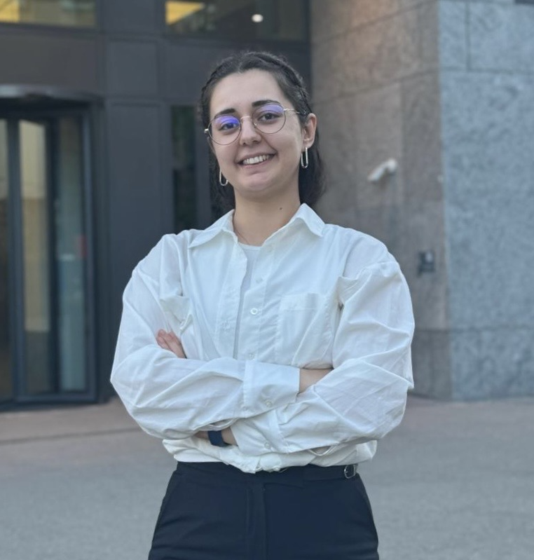

Darya Zare
MSc student at UZH/ETH AI safety student researcher at ETH
I’m an MSc student in Computer Science majoring in Artificial Intelligence at UZH and ETH Zurich, interested in AI safety, interpretability, evaluation, and alignment. In the Learning and Adaptive Systems (LAS) group, I currently study emergent misalignment and how to evaluate language models across single-turn tasks and multi-turn agentic settings.

Research interests
Broadly, I am interested in AI safety, interpretability, evaluation, and alignment. More specific interests include:
- Emergent misalignment. Understanding how fine-tuning affects model behavior, and comparing base and fine-tuned language models.
- Agentic evaluation. Studying safety-relevant behavior in multi-agent settings and across long interaction trajectories.
- Reliable retrieval. Learning calibrated relevance scores with compact language models to filter misleading evidence in RAG systems.
Selected publications
Google ScholarExperience & education
Full CVJun 2026 – present
Student Researcher · AI Safety
Krause LAS group · ETH AI Center, ETH Zurich
Working on emergent misalignment and language model evaluation in multi-agent settings, supervised by Anna Hedström, Cynthia Chen, and Lukas Fluri.
Apr 2025 – Apr 2026
Research Assistant
ETH Zurich · Prof. Elliott Ash
Evidence retrieval, regulatory compliance, and uncertainty-aware relevance distillation.
Sep 2024 – present
MSc in Computer Science
University of Zurich
Major in Artificial Intelligence, minor in Data Science. Special student at ETH Zurich.
Dec 2024 – Jan 2025
Research Assistant
University of Zurich · Prof. Thomas Kurer
Open-source language models and NLP for French political survey data.
Jun 2021 – Aug 2024
Data Scientist
Metodata
Machine learning pipelines and social media analysis for Persian and English text.
2018 – 2023
BSc in Computer Engineering
Amirkabir University of Technology
Selected projects
Natural language search for real estate
2026A hybrid retrieval and ranking system built at the Robin Real Datathon. Our team won first place in the main challenge and third place in the Anthropic side challenge.
Neural network certification & robustness
2025Certified encoder and decoder properties using MILP and DeepPoly abstract interpretation, alongside PGD-based adversarial training. ETH Zurich course project.
Conversational movie recommendations
2025A recommendation chatbot combining language understanding, embeddings, and knowledge graph reasoning to answer questions and learn user preferences. UZH course project.